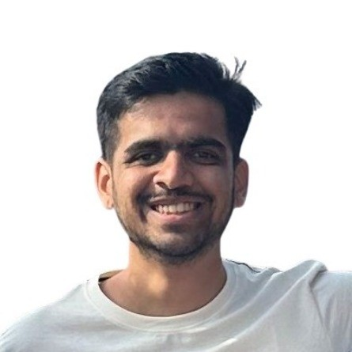

Manas Mhasakar
I am an incoming Master's student in Computer Science at Georgia Tech.
I am currently a Research Fellow at
Microsoft Research where I focus on leveraging large language models (LLMs) across various use cases, including assisted coding, education, and improving speaking skills.
My research interests lie in programming languages, formal methods, accessibility and HCI.
I am also interested in exploring the intersection of formal methods with Large Language Models (LLMs), which can potentially revolutionize the landscape of software engineering.
I graduated from BITS Pilani, Goa
with a Bachelor's degree in Computer Science in 2023.
During my undergrad, I was fortunate to work with Profs. Anup Mathew, Swaroop Joshi, and Abhishek Singh on
varied areas such as theory, software systems and accessibility.
Outside of work, I enjoy singing Indian classical music, playing table tennis and reading classic detective novels :)
publications
-
Comuniqa : Exploring Large Language Models for improving speaking skills
arxiv
Authors : Manas Mhasakar, Shikhar Sharma, Apurv Mehra, Utkarsh Venaik, Ujjwal Singhal, Dhruv Kumar, Kashish Mittal.
ACM COMPASS 2024 : 7th ACM SIGCAS/SIGCHI Conference of Computing and Sustainable Societies
prev. work experience
-
Research Fellow - Microsoft Research
August 2023 - Present
Worked under Kashish Mittal to work on an
affordable and accessible AI powered personal communication coach, Comuniqa.
Also developed an AI teaching assistant that couples as a chatbot for increased engagement and learning outcomes on online courses.
You can check out the app here.
-
Backend Intern - SuperPe
January 2023 - June 2023
-
Backend Intern - Dezerv
September 2022 - January 2023
-
-
Backend Intern - Coulomb.AI
November 2021 - April 2022
projects
-
We propose a technique to automate the process of evaluation. This is achieved by leveraging powerful techniques like symbolic execution and bounded model checking. Here we will be using a symbolic execution engine, KLEE, built on top of the LLVM compiler infrastructure, and a bounded model checker, CBMC, for C/C++ programs. These statically analyze code and generate a set of test cases.
-
Theorem Proving with Coq
Researched application of formal proofs in computational geometry and geometric modelling. Defined and constructed hypermaps in Coq using structural induction in a constructive point of view. Designed & incrementally proved correct a functional convex hull algorithm using hypermaps.